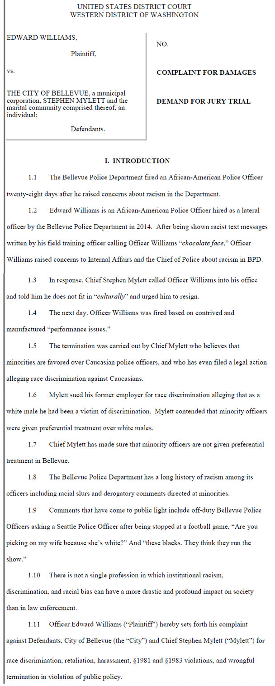

Mobile uploads
Just so you know... The new @[375323736952:274:Akron Police Department] chief that started today believes that black officers are favored over white officers and has filed a law suit alleging race discrimination against WHITE officers.
Why is Dan Horrigan SO bad at his job?